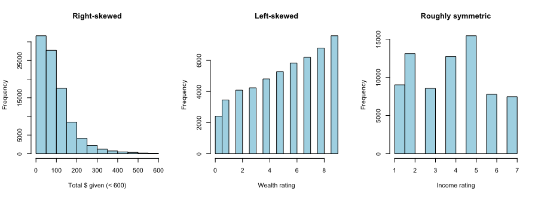
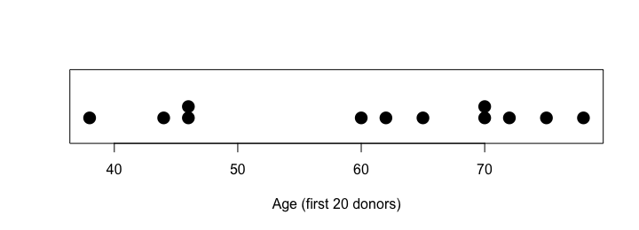
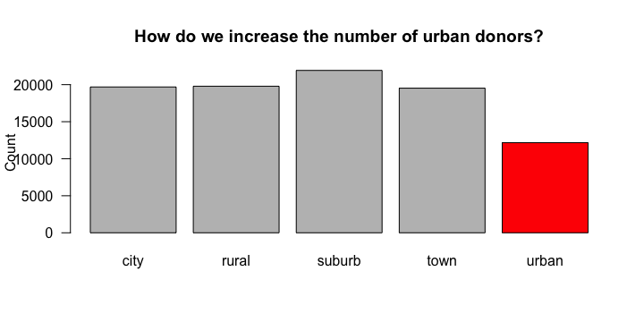
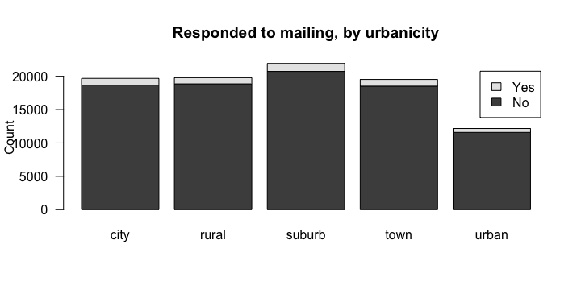

- ① Describing Shape with Histograms
- ② Dotplots & Stemplots
- ③④ Graphs for Categorical Data: Barplots
ヒストグラムで形を見る
ヒストグラムは量的データを区間（bin）に分けて、各区間の個数を柱にしたグラフです。たくさんのデータの形をつかむのに向いています（個々の値は見えなくなる）。
donors <- read.csv("donors.csv") donors1_20 <- donors[1:20, ] par(mfrow = c(1, 3)) hist(donors$totalGivingAmount[donors$totalGivingAmount < 600], main = "Right-skewed", xlab = "Total $ given (< 600)", col = "lightblue") hist(donors$wealthRating, main = "Left-skewed", xlab = "Wealth rating", col = "lightblue") hist(donors$incomeRating, main = "Roughly symmetric", xlab = "Income rating", col = "lightblue") par(mfrow = c(1, 1))

（寄付総額は最大 9,485 まであり柱がつぶれるので、600 未満だけを描いています。）
| 形 | 見た目 | 平均と中央値 |
|---|---|---|
| 右に歪む（right / positive skew） | 裾が右に長い | 平均 > 中央値 |
| 左に歪む（left / negative skew） | 裾が左に長い | 平均 < 中央値 |
| ほぼ左右対称 | 真ん中で折ると重なる | 平均 ≈ 中央値 |
c(mean = mean(donors$wealthRating, na.rm = TRUE), median = median(donors$wealthRating, na.rm = TRUE))
wealthRating は平均が中央値より小さく、左に歪んでいることと一致します。ほかに、山の数（単峰・二峰）や、どの値もほぼ同じ高さの一様（uniform）という形もあります。
ドットプロットと幹葉図
データが少ないときは、1つ1つの値が見えるグラフが便利です。
stripchart(donors1_20$age, method = "stack", pch = 16, cex = 2, ylim = c(0, 3), xlab = "Age (first 20 donors)")

幹葉図（stemplot）は、十の位を幹、一の位を葉として並べます。横に倒したヒストグラムに、実際の値が書き込まれたものです。
stem(donors1_20$age)
読み方：「3 | 8」は 38 歳、「7 | 00258」は 70, 70, 72, 75, 78 歳です。
| ドットプロット・幹葉図 | |
|---|---|
| 良い点 | 実際の値が見える／形がわかる／すき間（gap）やかたまり（cluster）が見える |
| 弱い点 | データが多いと使えない／幹葉図は読みにくい（上司への報告には不向き） |
カテゴリのグラフ：度数表と棒グラフ
urbanicity（都市度）のようなカテゴリ変数に、hist() や stripchart() は使えません。
hist(donors$urbanicity)
カテゴリはまず数えます。table() で度数、proportions() で割合です。
table(donors$urbanicity) round(proportions(table(donors$urbanicity)), 3) * 100
棒グラフは表を作ってから barplot() に渡します。
barplot(table(donors$urbanicity), las = 1, ylab = "Count", main = "How do we increase the number of urban donors?", col = c(rep("gray", 4), "red"))

2つのカテゴリ変数
「住んでいる地域」と「郵送に反応したか」の関係を見るには、二元表（two-way table）を作ります。
table(donors$urbanicity, donors$respondedMailing) round(proportions(table(donors$urbanicity, donors$respondedMailing), margin = 1), 3)
margin = 1 は「行ごとに割合を出す」指定です。各地域のうち何割が反応したかを比べられます。
barplot(table(donors$respondedMailing, donors$urbanicity), legend.text = c("No", "Yes"), las = 1, ylab = "Count", main = "Responded to mailing, by urbanicity")

出典: R4DS Ch.5 Exploratory Data Analysis（内容を要約・日本語で再構成）
donors$socioEconomicStatus の度数表と、割合（%・小数第1位）を求め、棒グラフを描いてください。
t <- table(donors$socioEconomicStatus) t round(proportions(t) * 100, 1) barplot(t)
average が約52%、highest が約31%、lowest が約17%（NA を除く）。順序のあるカテゴリなので、lowest → average → highest に並べ替えると読みやすい：t[c("lowest", "average", "highest")]。